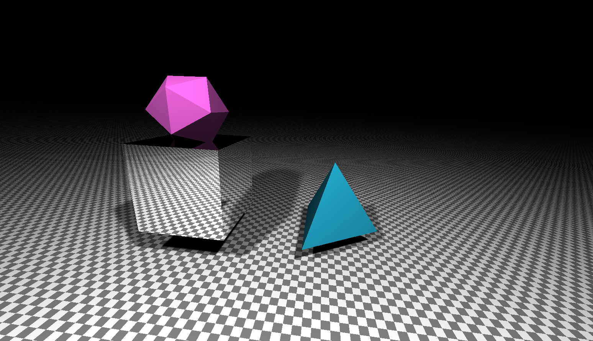
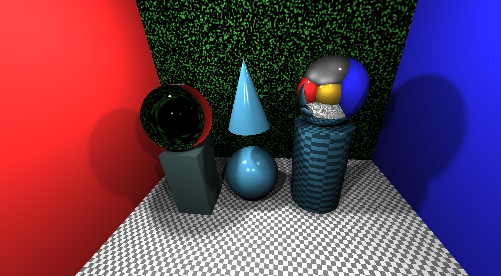
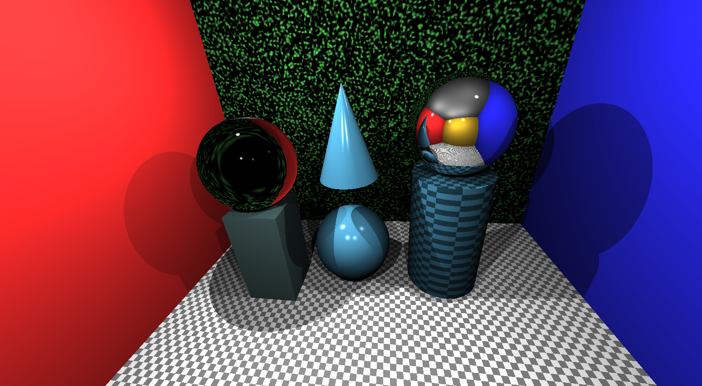
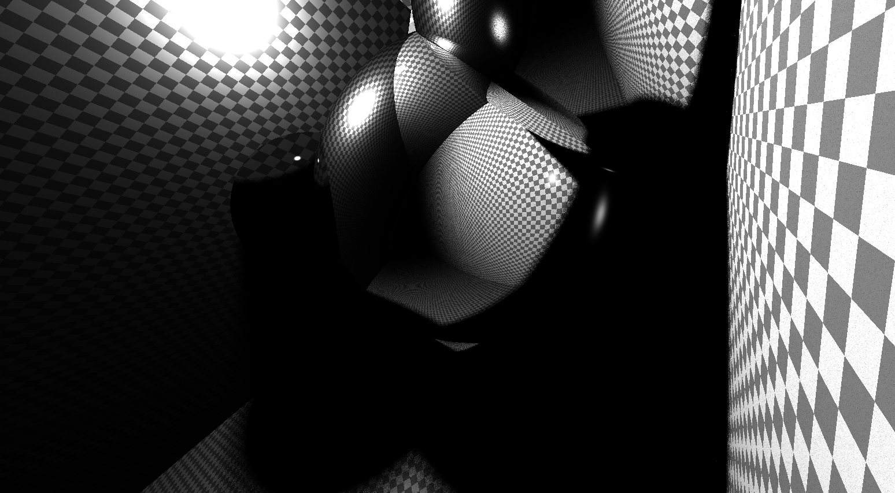
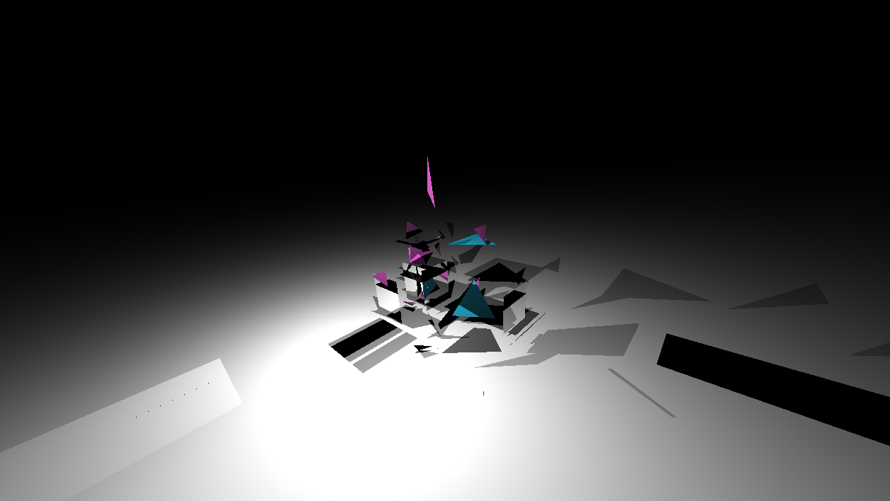
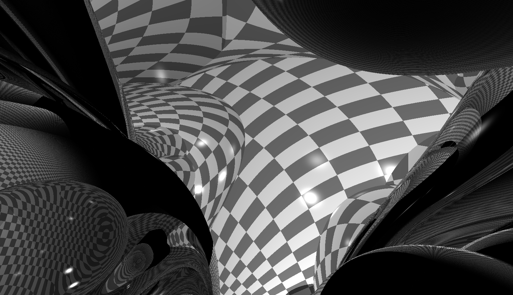

COS426 Assignment 3a Rendering Ray Tracer — Writeup
Switch to: Interactive Editor
- (0.0) Plane
- (2.0) Triangle
- (2.0) Sphere
- (2.0) Box
- (2.0) Cylinder
- (3.0) Cone
- (1.0) Shadows
- (3.0) Soft shadows
- (2.0) Transmission
- (1.0) Checkerboard
- (1.5) Phong material
- (1.5) Special material
- (1.0) Scene
- (1.0) Animate
- (1.0) Art
Plane
This feature was implemented by the course staff. I used it as an example of how to calculate the intersection with primitives.
Here is an example output where the planes are used for cornell box :

I did not encounter any particular challenges in implementing this.
Triangle
We followed the slides' implementation of the geometry intersection of the triangle.
Here is an image of our finished mesh scene with soft shadows:
scene=mesh

Here is an image of our finished default scene with soft shadows:
scene=mesh

Sphere
We followed the slides' implementation of the geometry intersection of the sphere.
Box
We followed the slides' implementation of the axis-aligned box.
Cylinder
We followed the slides' implementation of the cylinder, both for the disks and the side panels.
Cone
We followed the slides' implementation of the cone, both for the disk and the sloping surface.
Shadows
We followed the slides' implementation of hard shadows as detailed in precept. The current code has commented out the use of hard shadows, although we have attached a picture of the use of hard shadows above.
Here is an image of our finished default scene with hard shadows:

Soft shadows
We followed the slides' implementation of soft shadows as detailed in precept. The current code uses this implementation of soft shadows. As was designated okay by the assignment specs and as cited in our code, we adapted code from an outside source (http://stackoverflow.com/questions/4200224/random-noise-functions-for-glsl) to generate a random number [-1, 1] to form a sphere around the point of intersection. We then had multiple rays shooting toward the light source, and the ratio of rays that hit the light source before intersecting with anything in its path was taken into consideration in calculating lighting as that position of intersection.
Here is an image of our finished default scene with soft shadows:
scene=default
Transmission
We used the GLSL built in-command refract() to implement Snell's Law for refraction.
Checkerboard
We used the slides' general implementation of checkerboard to get a basic feel for how to do checkerboard. In order to actually implement it, we converted the axes to be directly over the given area by use of a rotation matrix, the code for which was taken from an outside source (http://www.neilmendoza.com/glsl-rotation-about-an-arbitrary-axis/) as was okayed by Riley during precept and as was cited in our code. From this rotated perspective we then calculated what spaces were what color depending upon the product of the x and y values of the new perspective.
Phong material
To implement the phong material, we added the specular component to the light contribution as calcuated by the angle alpha (angle from the reflected ray to the camera / viewer's ray).
Special material
To implement the special material, we took a noise function from an outside source (https://github.com/ashima/webgl-noise/blob/master/src/noise3D.glsl) as cited in our code and approved by Riley and the assignment specs. We then implemented this on the special material in the scene.
The special material can be seen in the background of this image - the green wall:
scene=default
Scene
To implement the scene, we experimented with reflective spheres in an all checkerboard material setting by making a separate JSON file.
Here is the scene we made:
scene=myScene

Animate
(within ray intersects sphere we moved the center of the sphere acording to an orbit)
You can include as many results as you want, but please at least include the following results:
animated=1
Art
Here are several pieces of art for your viewing pleasure.
This was created in a failed implement of triangular intersection.

This was created by moving inside a segment of our created scene myScene.
scene=myScene
